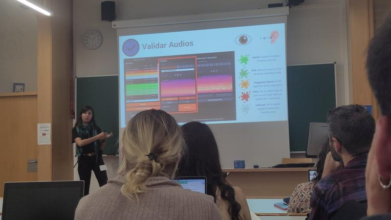

From prediction to accuracy in the validation of BirdNET in acoustic identification of birds in local ecosystems
I Jornadas Ecoinformáticas
AEET (Asociación Española de Ecología Terrestre)
Universidad de Alcalá de Henares, Madrid, Spain
November 2024
We assessed the performance of BirdNET, an AI tool for automatic species identification, using passive acoustic monitoring (PAM) data collected from the Bay of Cádiz. PAM provides continuous data from remote areas but generates large volumes of audio, which are challenging to process. BirdNET aims to automate species identification, yet its accuracy is affected by training data biases, particularly for species and environments not represented in the dataset. Our study focused on two common wader species in the Bay of Cádiz: the common sandpiper (Actitis hypoleucos) and the common redshank (Tringa totanus). Using a Song Meter Mini 2 recorder, we collected 618 hours of audio between April and August 2024. BirdNET’s initial predictions for these species were unreliable, often confusing them with other local species such as the Common Nightingale (Luscinia megarhynchos) and the Eurasian Collared dove (Streptopelia decaocto). To address this, we developed a Python-based web app to manually validate and correct BirdNET’s predictions. The app can be downloaded from our GitHub repository [1]. Our validation of more than 400 segments revealed that while BirdNET performs poorly for the target species, it yields high accuracy for the misidentified species. These findings highlight BirdNET’s limitations in identifying species not well-represented in its training data but suggest that fine-tuning the model with local acoustic data could improve its accuracy. The validation data is stored in a private repository for future ecological analyses. This study emphasizes the importance of validating AI-generated data and demonstrates how local acoustic data can enhance species identification in complex environments.


